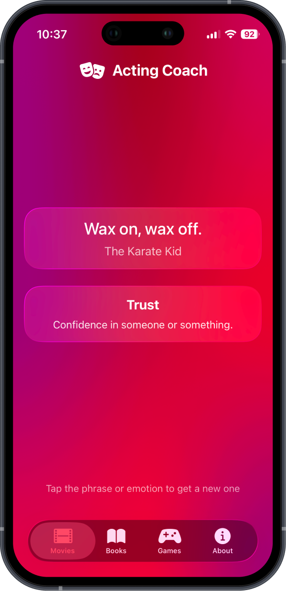
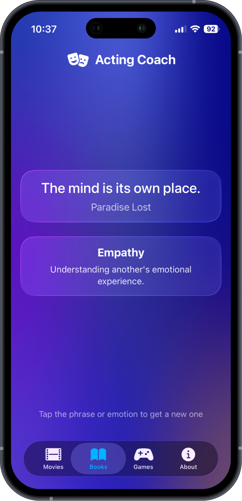
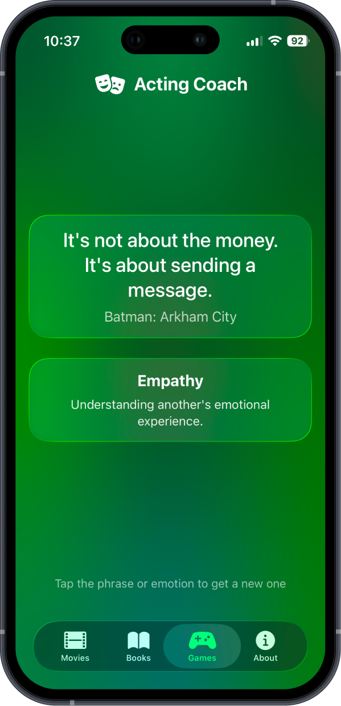

Acting Coach
Explore your range. Sharpen your delivery.
released
Practice acting with random phrases and emotions from movies, books, and games.
Tap to explore new deliveries, stretch your range, and spark creativity.



About the app
Acting Coach is a practice tool for actors to explore emotions and delivery through famous phrases from movies, books, and video games.
Tap on any phrase or emotion to get a new random selection. Use these combinations to practice your acting skills, experiment with different emotional deliveries, and discover new ways to express yourself.